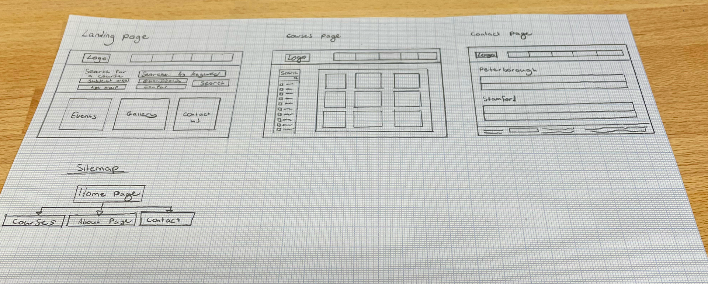

Bauhaus - College Website Redesign
College Work - This range of work was produced during my time on Level 3 Graphic Design.
This is my final piece which was made for the Bauhaus Brief. I was tasked to design something related to the Bauhaus movement, so I decided in light on my founded passion for UI/UX design that I would redesign the college website with the theme in mind.

Wireframe:
Here is a rough wireframe sketch of how the website could be designed. I looked at other college websites and took certain ideas and adapted and modified them for the college website I’m going to design. I do like how simple and easy it is to view and navigate the website, this is obviously something key to have in your website, especially for a young person trying to find a course they want to start on. I want to keep the same type of theme they have currently on the Peterborough College website and spice it up a bit to make it more unique. I want my website design to stand out compared to other college websites.

Colour Pallete:
This is the colour pallete I put together which has all of the hex codes/previews of the Peterborough College colours. Even though there is only a few options, I really wanted to stay with the colours they used and be consistent with the new design with the Inspire Education Group.

Design Process:
Here is a screenshot of the website I’m designing. I decided to keep the same type of style as the current Peterborough College and use their branding such as the logo and same font so it doesn’t look out of place. I also implemented different types of shapes as a banner underneath the header to give it that Bauhaus themed look. I also went with the black, white and green college colour scheme as well. I think so far I really like the look of it all, all of the colours are working well together and it’s following well.